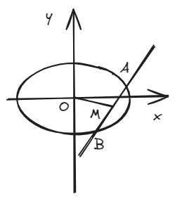
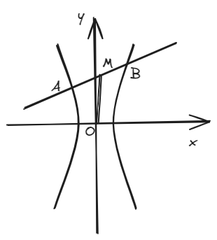
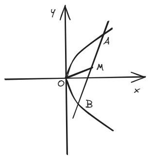
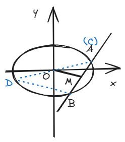

结论三：中点弦斜率关系
一、结论描述
1.椭圆
一直线穿过椭圆交椭圆于相异的\(A\)、\(B\)两点，取\(AB\)中点\(M\)，连接\(OM\)，则:
若焦点在x轴上有：
若焦点在y轴上有：

2.双曲线
一直线穿过双曲线交双曲线于相异的\(A\)、\(B\)两点，取\(AB\)中点\(M\)，连接\(OM\)，则:
若焦点在x轴上有：
若焦点在y轴上有：

3.抛物线
一直线穿过抛物线交抛物线于相异的\(A\)、\(B\)两点，取\(AB\)中点\(M (x_0,y_0)\)，则:
若焦点在x轴上有：
若焦点在y轴上有：

二、结论证明
核心思路是点差法，这里用水平放置的椭圆为例，其他情况思路类似。
不妨设\(A(x_1,y_1)\)，\(B(x_2,y_2)\)，因两点都在椭圆上，故有：
\((1)\)式减去\((2)\)式得到：
整理后得到：
证毕
三、例题
（2023全国乙卷）设\(A\)、\(B\)为双曲线\(x^2 - \frac{y^2}{9} = 1\)上两点，下列四个点中，可为线段\(AB\)中点的是（ ）。
（吐槽：这种题放11题，要是秒不掉去笨笨地算肯定浪费时间）
四、拓展结论
可以了解一下“椭圆和双曲线的第三定义”，你或许会发现第三定义和结论三的斜率乘积是一样的，那么这之间有什么关系呢？实际上，第三定义也是结论三的推论（见下）的特殊情况。
1.椭圆
\(CD\)为经过原点\(O\)的直线，交椭圆于\(C\)和\(D\)两点，\(B\)为除\(C\)和\(D\)以外的椭圆上的任意一点，则：
若焦点在x轴上：
若焦点在y轴上：
2.双曲线
\(CD\)为经过原点\(O\)的直线，交双曲线于\(C\)和\(D\)两点，\(B\)为除\(C\)和\(D\)以外的双曲线上的任意一点，则：
若焦点在x轴上：
若焦点在y轴上：
证明思路其实很简单，下图中的中位线\(BD\)和\(OM\)存在平行关系，即\(k_{BD} = k_{OM}\)
